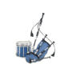

Helsinki Pipes and Drums on Skotlannin ylämaan säkkipillin harrastajista ja rumpaleista koottu säkkipilliorkesteri. Se aloitti toimintansa vuonna 1991 MacGregor Highlanders -nimisenä. Nimi vaihdettiin vuonna 1997.
Yhtye on Suomen ainoa ja mitä todennäköisimmin maailman pohjoisin. Esiintyvään kokoonpanoon kuuluu tällä hetkellä kuusi säkkipillinsoittajaa, sekä kolme rumpalia.
Merkittävä osa koulutus- ja kulttuuriyhteistoimintaa tapahtuu pohjoismaisessa yhteistyössä. Opettajia ja soittajia on tuotettu mm. Ruotsista, Tanskasta ja Uudesta Seelannista.
Yhtyeen jäsenet ovat vuosien mittaan osallistuneet kursseille ja kilpailuihin mm. Tanskassa, Ruotsissa, Belgiassa, Skotlannissa ja Yhdysvalloissa, sekä esiintyneet ympäri maailmaa. Vuoden 1999 kilpailuissa yhtye sijoittui kolmanneksi omassa sarjassaan ja soittajat saivat kaikkiaan kahdeksan palkintoa sarjoissaan, mitä on pidettävä varsin hyvänä menestymisenä. Vuonna 2002 yhtyeen ainut kilpailuihin osallistuja edusti Suomea voittamalla sarjansa.
Vuonna 2002-2007 yhtyeen jäsenet ovat osallistuneet Skandinavian-, Euroopan- ja Maailmanmestaruuskisoihin osina kansainvälisiä yhtyeitä, kuten Aarhus Pipes and Drums ja PD1RE. Vuoden 2005 Skandinavian mestariorkesteri, PD1RE voitti jäseninään kaksi Helsinki Pipes and Drumsin kasvattia, Manne Laukkanen rumpusektiossa ja Gustav Henriksson säkkipillisektiossa.
Yhtye harjoittelee säännöllisesti ja on vuosien varrella esiintynyt monilla festivaaleilla, televisiossa sekä erilaisissa tilaisuuksissa, kuten:
St. Patrick's Day Paradessa (Pyhän Patrikin päivän paraatissa) Manhattanilla, 5th Avenuella, New Yorkissa.
Kaustisten kansanmusiikkijuhlilla
Kotkan meripäivillä
Rod Stewartin konsertissa (Hartwall Areena)
Look UK - tapahtumassa (Tampere)
Crusell - viikoilla
Esplanadin lavalla
Aamu - TV:ssä
”Hyvät Herrat” tv-ohjelmassa (MTV3)
Oulun Highland Games - tapahtumassa (Eurosport)
Long Island Highland Games - tapahtumassa New Yorkissa
Vuoden 2004 Hamina Tattoossa
...sekä useissa pienemmissä tilaisuuksissa.
Yhtyeen ohjelmisto on laaja, sekä erittäin monipuolinen. Se koostuu perinteisestä ja uudemmasta skotlantilaisesta musiikista, jota esitetään skotlantilaisella ylämaan säkkipillillä (The Great Highland Bagpipe) sekä skotlantilaisella pienellä säkkipillillä (Scottish Smallpipes) sekä erilaisilla rummuilla (basso-, tenori- ja marssirummut). Orkesteri esittää erikoiskonserteissaan usein myös modernimpaa kelttimusiikkia sähköisellä orkesterilla ja vokalisteilla vahvistettuna.
Orkesteri pukeutuu aina esiintymisissään perinteiseen Skotlantilaiseen asuun.
Yhteistyössä muiden pohjoismaisten yhtyeiden kanssa
Helsinki Pipes & Drums on valmis tekemään myös
suurempia paraateja (n.30 säkkipillinsoittajaa ja 10-15
rumpalia).
Tilaukset:
e-mail: keikkamyynti(at)bagpipe.fi
Lisätietoja (web-master):
e-mail: info(at)bagpipe.fi
